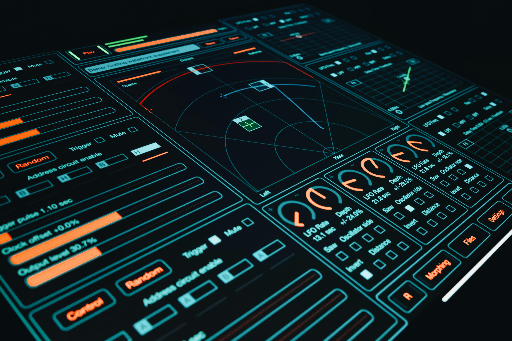

Definición
La usabilidad web es una característica del diseño de sitios y aplicaciones que se enfoca en la facilidad con la que los usuarios pueden interactuar con una página web. Su objetivo principal es que cualquier persona, sin importar su experiencia, pueda navegar y entender el contenido sin dificultades.
Un sitio con buena usabilidad permite encontrar información rápidamente, realizar acciones sin errores y disfrutar de una experiencia agradable.
Importancia de la usabilidad web
La usabilidad es fundamental en el desarrollo web moderno porque influye directamente en la satisfacción del usuario. Si un sitio es difícil de usar, las personas lo abandonan rápidamente.
Una buena usabilidad ayuda a:
- Mejorar la experiencia del usuario
- Aumentar el tiempo de permanencia en la página
- Reducir errores al navegar
- Facilitar el acceso a la información
- Mejorar la imagen del sitio web o empresa
Características de una buena usabilidad
Un sitio web usable debe cumplir con ciertos principios importantes:
- Simplicidad: diseño limpio y sin elementos innecesarios
- Claridad: el contenido debe ser fácil de entender
- Accesibilidad: debe funcionar en todos los dispositivos
- Navegación intuitiva: el usuario no debe confundirse
- Velocidad: carga rápida del sitio web
Ejemplo visual
La siguiente imagen representa un diseño moderno enfocado en la experiencia del usuario y la organización de la información.

Conclusión
La usabilidad web es un elemento clave en el diseño moderno de sitios web. No solo se trata de que una página se vea bonita, sino de que sea funcional, fácil de usar y eficiente.
Un buen diseño centrado en la usabilidad mejora la satisfacción del usuario, aumenta la interacción y hace que el sitio sea más exitoso.